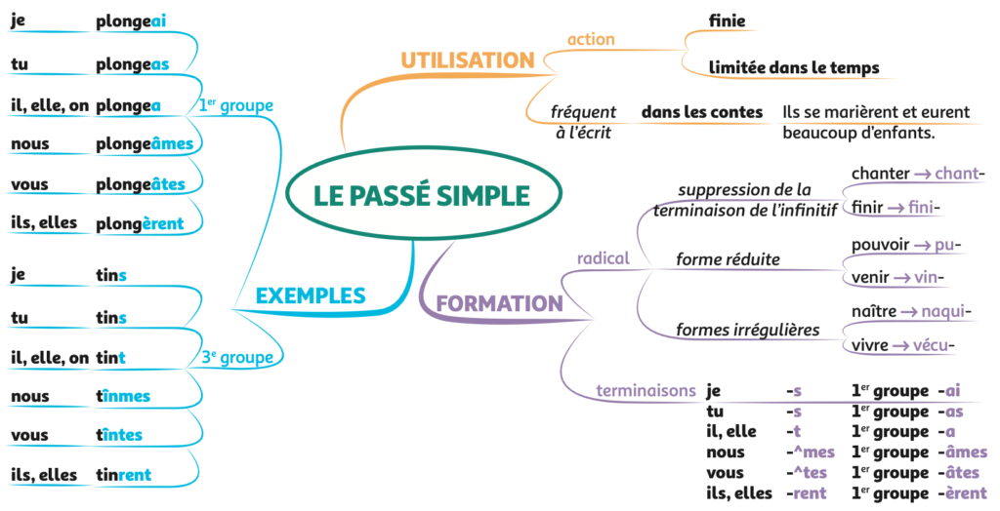
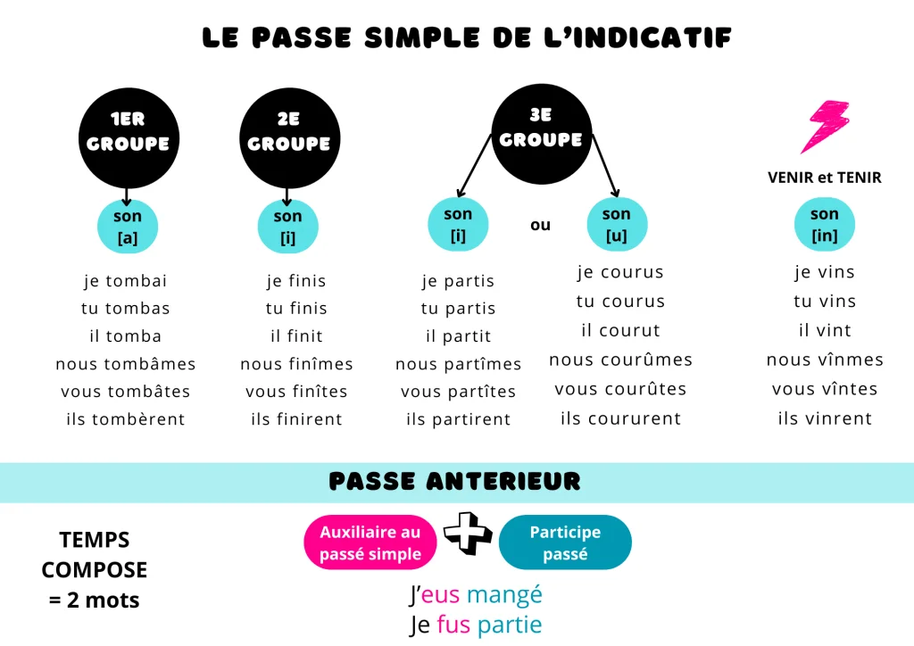

Le passé simple de l'indicatif
À retenir
Le passé simple est un temps du passé utilisé principalement à l'écrit (romans, contes, récits historiques). Il exprime une action ponctuelle, achevée et de premier plan. Il fait avancer l'histoire !
Attention : On ne l'utilise pas à l'oral (on utilise le passé composé) ni dans les textes au présent (journal intime, lettre, discours).
Les 4 types de terminaisons
| Type | Verbes concernés | Terminaisons | Exemple |
|---|---|---|---|
| -A | 1er groupe + aller | -ai, -as, -a, -âmes, -âtes, -èrent | il aima, il alla |
| -I | 2e groupe + certains 3e | -is, -is, -it, -îmes, -îtes, -irent | il finit, il partit |
| -U | certains 3e groupe | -us, -us, -ut, -ûmes, -ûtes, -urent | il put, il voulut |
| -IN | tenir, venir et dérivés | -ins, -ins, -int, -înmes, -întes, -inrent | il vint, il tint |
Conjugaison complète
Les valeurs du passé simple
Action ponctuelle et achevée
Le passé simple présente l'action comme un point, sans durée, complètement terminée.
Il frappa trois coups à la porte.
La cloche sonna midi.
Action de premier plan
Face à l'imparfait (décor, description), le passé simple constitue les actions principales qui font avancer le récit.
La pluie tombait (imparfait) depuis des heures quand soudain l'orage éclata (passé simple).
Succession d'actions
Le passé simple permet d'enchaîner les actions les unes après les autres.
Il se leva, s'habilla rapidement et sortit sans faire de bruit.
Action soudaine
Souvent accompagné d'adverbes comme "soudain", "tout à coup", il marque la brutalité d'un événement.
Soudain, le loup apparut dans la clairière.
Tout à coup, la porte s'ouvrit violemment.
Action brève
Il exprime une action courte, sans durée particulière.
Elle toussa discrètement pour attirer l'attention.
L'enfant sourit avant de s'endormir.
Temps du récit écrit
Le passé simple est caractéristique des contes, romans, récits historiques. Il n'est pas utilisé à l'oral ni dans les textes au présent (journal intime, lettre, discours).
Ils se marièrent et eurent beaucoup d'enfants.
Imparfait ou passé simple ?
Dans un récit au passé :
- Imparfait = description, habitude, action qui dure (le décor, l'arrière-plan)
- Passé simple = actions principales, soudaines, qui se succèdent (ce qui fait avancer l'histoire)
Pièges à éviter
1re personne des verbes en -ER
Erreur fréquente : confondre passé simple et imparfait à la 1re personne.
❌ Je chantais (imparfait) ≠ ✅ Je chantai (passé simple)
Astuce infaillible : remplace "je" par "tu" !
👉 Tu chantas → je chantai ✅
👉 Tu chantais → je chantais (imparfait)
Tenir et Venir (piège des "venins")
Ne dis pas "je venis" ou "je vennis" !
✅ Venir : je vins, tu vins, il vint, nous vînmes, vous vîntes, ils vinrent
✅ Tenir : je tins, tu tins, il tint, nous tînmes, vous tîntes, ils tinrent
Dérivés : revenir, devenir, parvenir, se souvenir (comme venir) ; maintenir, obtenir, contenir (comme tenir)
L'accent circonflexe oublié
Ne pas oublier l'accent circonflexe !
✅ nous parlâmes, vous parlâtes
✅ nous finîmes, vous finîtes
✅ nous pûmes, vous pûtes, nous crûmes, vous crûtes
✅ nous vînmes, vous vîntes
Attention : pas d'accent à la 3e personne du singulier : il put, il crut, il vint
Confusions fréquentes
il dit (présent) / il dit (passé simple) → même forme ! (le contexte permet de savoir)
je fis (faire) ≠ je fus (être)
il put (pouvoir) ≠ il put (verbe "put" ? n'existe pas)
il lut (lire) ≠ il lût (n'existe pas)
il crut (croire) ≠ il crût (croître, rare)
Imparfait ou passé simple ?
Imparfait : action qui dure, description, habitude (arrière-plan)
Ex: La pluie tombait depuis des heures.
Passé simple : action ponctuelle, soudaine, de premier plan
Ex: Soudain, l'orage éclata.
Dans un récit : l'imparfait plante le décor, le passé simple fait avancer l'histoire.
Cartes mentales
Carte 1 - Récapitulatif

Carte 2 - Verbes fréquents

Carte 3 - Terminaisons
